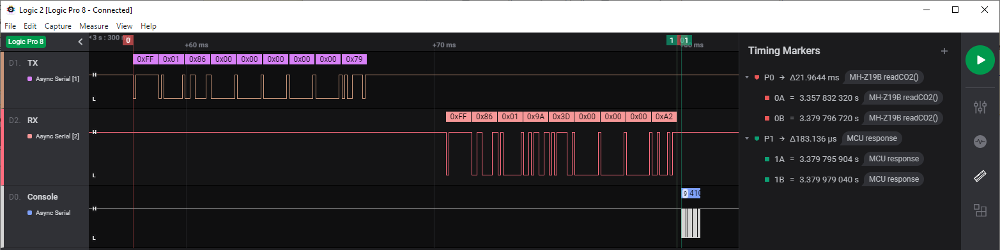

|
Erriez MH-Z19B CO2 sensor library for Arduino 1.0.0
This is a MH-Z19B CO2 sensor library for Arduino with a small footprint.
|
|
Erriez MH-Z19B CO2 sensor library for Arduino 1.0.0
This is a MH-Z19B CO2 sensor library for Arduino with a small footprint.
|
This is a MH-Z19B / MH-Z19C CO2 sensor library for Arduino. It has been built from scratch to support hardware and software serial with a small footprint.
The MH-Z19 is a NDIR (Non-Dispersive Infrared) type gas sensor with built-in temperature compensation to measure CO2 concentration in air.

WARNING: The pins between MH-Z19B and MH-Z19C are different. See tables below:
The following targets are supported and tested:
The table below displays the human impact of CO2:
| CO2 ppm | Description |
|---|---|
| 0..399 | Incorrect values. Minimum value starts at 400ppm outdoor fresh air. |
| 400..1000 | Concentrations typical of occupied indoor spaces with good air exchange. |
| 1000..2000 | Complaints of drowsiness and poor air quality. Ventilation is required. |
| 2000..5000 | Headaches, sleepiness and stagnant, stale, stuffy air. Poor concentration, loss of attention, increased heart rate and slight nausea may also be present. |
| >5000 | Higher values are extremely dangerous and cannot be measured by this sensor. |
The sensor requires an internal calibration regularly. Without it, the minimum value drifts away which is noticeable after a few weeks of operation. With my experiments, the minimum value was drifted to 800ppm after 3 months continues operation without a calibration.
There are two calibration options:
Automatic calibration is recommended when the sensor cannot be moved outdoor with fresh air. This calibration method requires a regularly ventilated room at 400ppm, at least once in 1..3 weeks. Additionally, it requires continues power-up without interruptions, otherwise the calibration data will not be updated correctly.
Automatic calibration configuration:
setAutoCalibration(true) (Default from manufacture).setAutoCalibration(false).The status can be read with function getAutoCalibration().
Note:
For simplicity, this library uses the terminology Automatic Calibration which is identical to the ABC (Automatic Baseline Correction) logic on/off mentioned in the datasheet.
Procedure for manual calibration at 400ppm:
startZeroCalibration() once. This will send command 0x87 Zero Point Calibration, but is not a zero calibration as stated in the datasheet. There is no nitrogen needed as this calibration is performed at 400ppm.Now the sensor is calibrated. Repeat the sequence more often for higher accuracy.
The SPAN point calibration procedure is not implemented in this library as it requires special calibration equipment. This functionality is not available in MH-Z19C.
Procedure according to the MH-Z19C datasheet:
Initialization Software Serial
Use a Software Serial when no hardware serial is available. Sometimes a 3rd party library is required, for example for ESP32 targets by installing ESPSoftwareSerial. It must be installed into .arduino15/packages/esp32/hardware/esp32/<version>/libraries/EspSoftwareSerial, because the library contains a naming conflict with existing SoftwareSerial.h built-in libraries.
Initialization Hardware Serial
Any hardware serial like Serial, Serial1, Serial2 etc can be used when supported by the CPU. Multiple hardware serial ports are only available on targets like ATMEGA2560, Leonardo and SAM DUE boards:
General initialization
The optional items of the initialization sequence can be omitted.
Read CO2 loop
Read CO2 with minimum interval asynchronous function isReady(). A good practice is to check error returns < 0.
Print internal settings
All tests are performed with sensor version string "0443".
Set automatic calibration
Turn automatic calibration on or off once at startup:
The following commands are documented, used and tested by the library:
| Command | Description |
|---|---|
| 0x79 | Set auto calibration on/off |
| 0x86 | Read CO2 concentration |
| 0x87 | Calibration zero point at 400ppm (not 0 ppm) |
| 0x88 | Calibrate span point (NOT IMPLEMENTED) |
| 0x99 | Set detection range |
The following commands are not documented, are used and tested by the library:
| Command | Description |
|---|---|
| 0x7D | Get auto calibration status (NOT DOCUMENTED) |
| 0x9B | Get range detection (NOT DOCUMENTED) |
| 0xA0 | Get firmware version (NOT DOCUMENTED) |
More information about undocumented commands: https://revspace.nl/MH-Z19B.
NOTE: Sending untested commands may damage the sensor permanently! Use at your own risk.
Unfortunately, the sensor has no possibility to read warming-up status, so the library must wait at least 3 minutes after reset or power-on. To speedup the boot process, macro MHZ19B_SMART_WARMING_UP can be enabled in ErriezMHZ19B.h to enable smart warming-up when the MCU is reset and MH-Z19B powered > 3 minutes.
The screenshot below displays the response timing of a synchronous readCO2() call which takes 22.1ms on an Arduino UNO:

Please refer to the Wiki page.
This project is published under MIT license with an additional end user agreement (next section).
End users shall accept the End User Agreement holding export restrictions to Russia to stop the WAR before using this project.